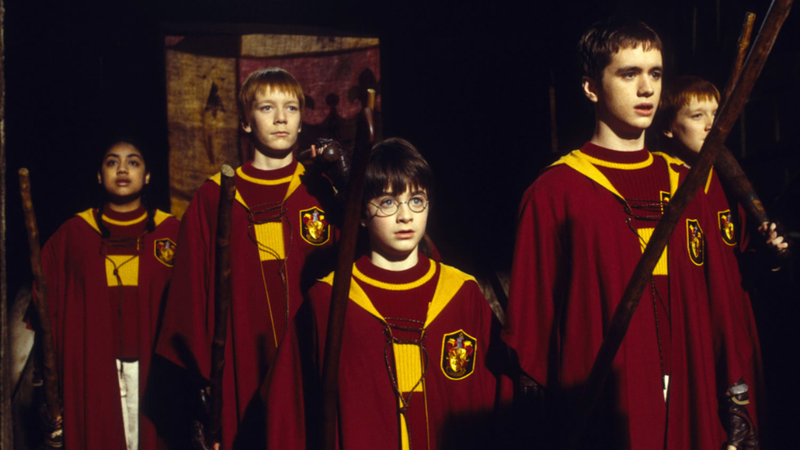
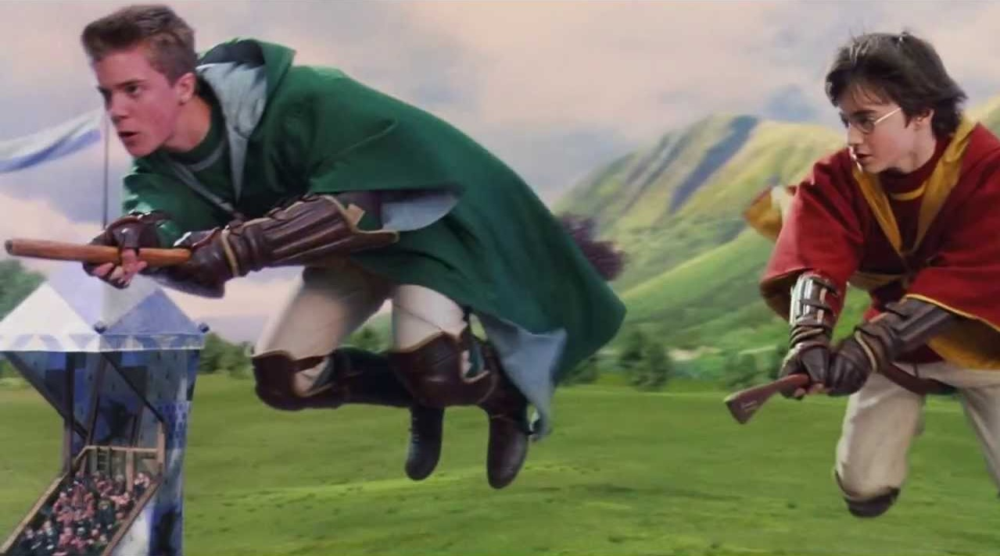
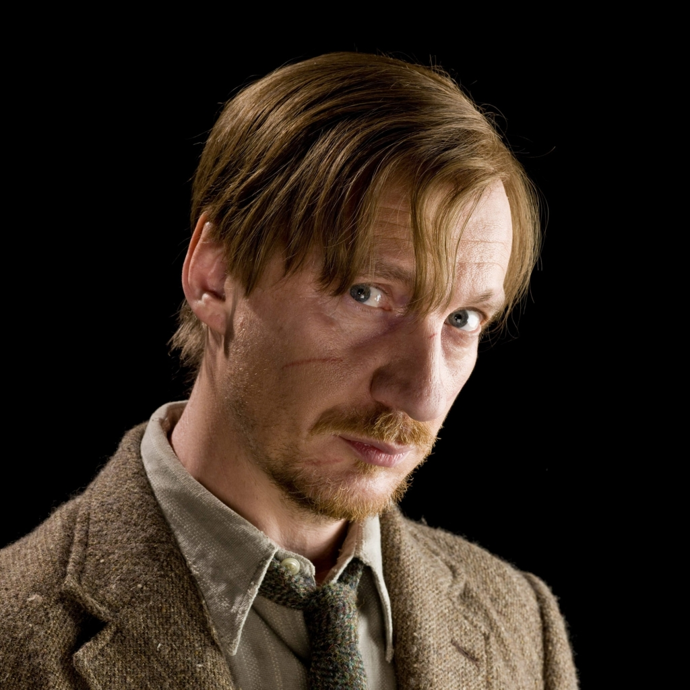

A casa Grifinória foi fundada por Godric Gryffindor, um bruxo famoso por sua coragem e ousadia. Para ele, a qualidade mais importante em um bruxo era a coragem — a disposição de fazer o que é certo, mesmo quando isso envolve grandes riscos. A casa valoriza também a determinação, a força de vontade e a disposição de lutar pelas próprias crenças. Seus membros são conhecidos por sua bravura, seja em batalhas físicas, seja em situações difíceis que exigem coragem moral. A leão, símbolo da casa, reflete a coragem e a liderança que são características centrais para quem pertence a Grifinória.
Além da coragem, a honra e a justiça são fundamentais para os grifinórios. Eles são guiados por um forte senso de moralidade, sempre prontos a lutar por aquilo que acreditam ser certo. A casa acredita que a coragem deve ser acompanhada de honestidade e respeito pelos outros. Os grifinórios não hesitam em desafiar autoridades ou ir contra a corrente quando percebem que algo está errado, colocando a justiça acima de qualquer outra coisa. A busca pela verdade e pela justiça faz com que muitos de seus membros se destaquem em momentos decisivos, seja na defesa de amigos ou na luta contra forças das trevas.
A casa Grifinória é conhecida pela liderança e pela rivalidade com a Sonserina. Enquanto os grifinórios buscam fazer o que é certo, os sonserinos, muitas vezes, são retratados como mais focados no poder e no sucesso a qualquer custo. Essa diferença de valores alimenta a rivalidade entre as duas casas ao longo dos séculos. Os grifinórios se destacam não apenas em batalha, mas também em momentos de liderança em tempos de crise. Personagens como Harry Potter, Hermione Granger e Ron Weasley exemplificam a força de caráter da Grifinória — pessoas que, diante da adversidade, se unem para enfrentar os maiores desafios e liderar os outros na luta contra as forças do mal.
O legado de Grifinória é indiscutivelmente um dos mais positivos e inspiradores dentro de Hogwarts. Com sua ênfase na coragem, honra e justiça, a casa se tornou um símbolo de luta contra as forças das trevas, não importa o custo. Ao longo dos anos, muitos dos maiores heróis de Hogwarts vieram de Grifinória, incluindo Harry Potter, que, em sua jornada, sempre demonstrou que a coragem verdadeira é aquela que envolve não apenas a bravura, mas também a escolha pelo bem. O legado de Grifinória é marcado pela liderança em momentos de crise e pela determinação de nunca desistir daquilo em que se acredita, inspirando gerações de bruxos e bruxas a enfrentarem seus medos e a se levantarem pelo que é certo, sempre.
